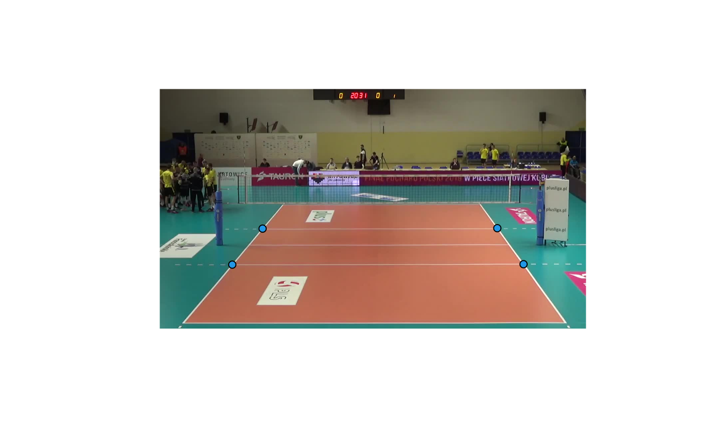

Transform points from image coordinates to court coordinates or vice-versa
Source:R/transformation.R
ov_transform_points.RdThe court coordinate system is that used in datavolley::dv_court(), datavolley::ggcourt(), and related functions.
Try plot(c(0, 4), c(0, 7), type = "n", asp = 1); datavolley::dv_court() or ggplot2::ggplot() + datavolley::ggcourt() + ggplot2::theme_bw() for a visual depiction.
Image coordinates are returned as normalized coordinates in the range [0, 1]. You may need to scale these by the width and height of the image, depending on how you are plotting things.
Arguments
- x
numeric: input x points.
xcan also be a two-column data.frame or matrix- y
numeric: input y points
- ref
data.frame: reference, as returned by
ov_get_court_ref()orov_shiny_court_ref()- direction
string: either "to_court" (to transform image coordinates to court coordinates) or "to_image" (the reverse)
References
https://en.wikipedia.org/wiki/Camera_matrix. For general background see e.g. Ballard DH, Brown CM (1982) Computer Vision. Prentice-Hall, New Jersey
Examples
## the ref data for the example image
crt <- data.frame(image_x = c(0.05397063, 0.95402573, 0.75039756, 0.28921230),
image_y = c(0.02129301, 0.02294600, 0.52049712, 0.51884413),
court_x = c(0.5, 3.5, 3.5, 0.5),
court_y = c(0.5, 0.5, 6.5, 6.5))
## show the image
img <- jpeg::readJPEG(system.file("extdata/2019_03_01-KATS-BEDS-court.jpg",
package = "ovideo"))
plot(c(0, 1), c(0, 1), type = "n", axes = FALSE, xlab = "", ylab = "",
asp = dim(img)[1]/dim(img)[2])
rasterImage(img, 0, 0, 1, 1)
## convert the ends of the 3m lines on court to image coordinates
check <- data.frame(x = c(0.5, 3.5, 0.5, 3.5),
y = c(2.5, 2.5, 4.5, 4.5))
ix <- ov_transform_points(check, ref = crt, direction = "to_image")
## and finally plot onto the image
points(ix$x, ix$y, pch = 21, bg = 4)
